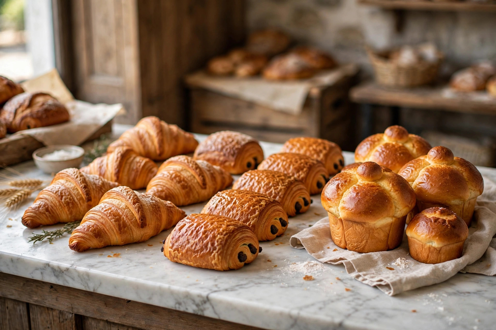

From Wikipedia, the free encyclopedia
| Viennoiserie | |
|---|---|
 | |
| Type | Pastry / baked goods |
| Place of origin | France (with Austrian influence) |
| Main ingredients | Enriched yeast dough, butter |
Viennoiseries (French pronunciation: [vjɛnwazʁi]; "things in the style of Vienna") are baked goods made from a yeast-leavened dough in a manner similar to bread, but with added ingredients — eggs, butter, milk, cream and sugar — that give them a richer, sweeter character, often with a laminated (layered) structure. They occupy the territory between bread and pastry, and are traditionally eaten at breakfast or as snacks.
The category includes:
The name reflects the Austrian origins of the style in France. Crescent-shaped pastries resembling the Austrian kipferl reached Paris in the late 1830s with the Viennese bakery opened on the Rue de Richelieu by Austrian entrepreneur August Zang. French bakers adapted the repertoire, replacing lard with butter and developing the technique of laminating yeast dough with butter — the pâte levée feuilletée — from which the modern croissant emerged by the early 20th century. In French bakeries (boulangeries), viennoiserie is a distinct station from both bread (boulangerie proper) and pastry (pâtisserie).
Laminated viennoiserie dough is made by enclosing a block of butter (beurre de tourage) in a lean yeast dough and repeatedly rolling and folding it — the process called tourage — to build up dozens of alternating layers. Temperature control is critical: the butter must stay pliable but cold so the layers remain separate and puff in the oven as the water in the butter turns to steam.